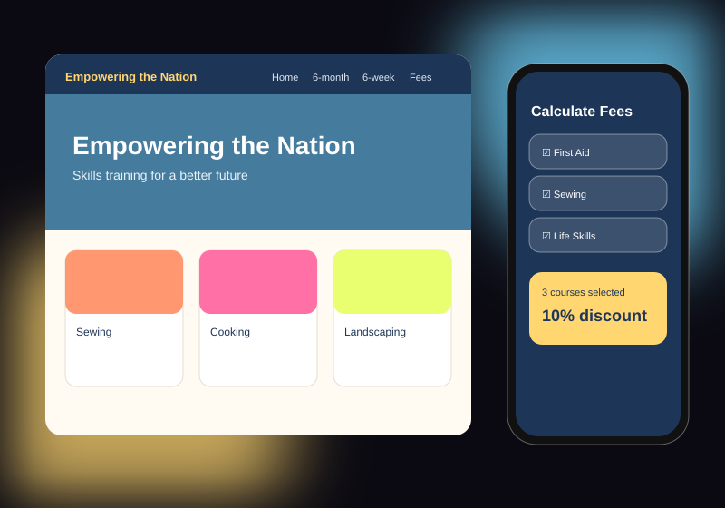

XHAW5112 · Work Integrated Learning · Team project
Empowering the Nation
For our Work Integrated Learning module, my team built a website and a matching mobile app for a skills-training organisation that offers six-month and six-week courses such as sewing, cooking, landscaping and life skills. Visitors can browse every course, contact the organisation and use a fee calculator that applies a discount of 5%, 10% or 15% depending on how many courses they choose. It was my most collaborative project so far and taught me how to split work, share code and agree on one design.
HTML, CSS & JavaScript
React Native
TypeScript
Teamwork